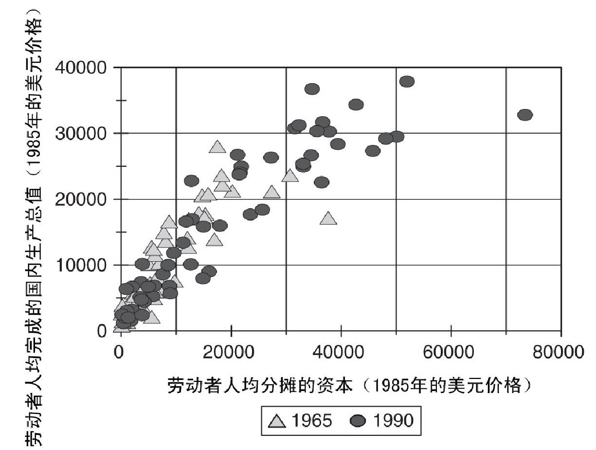
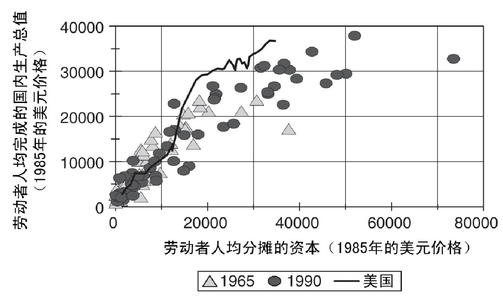
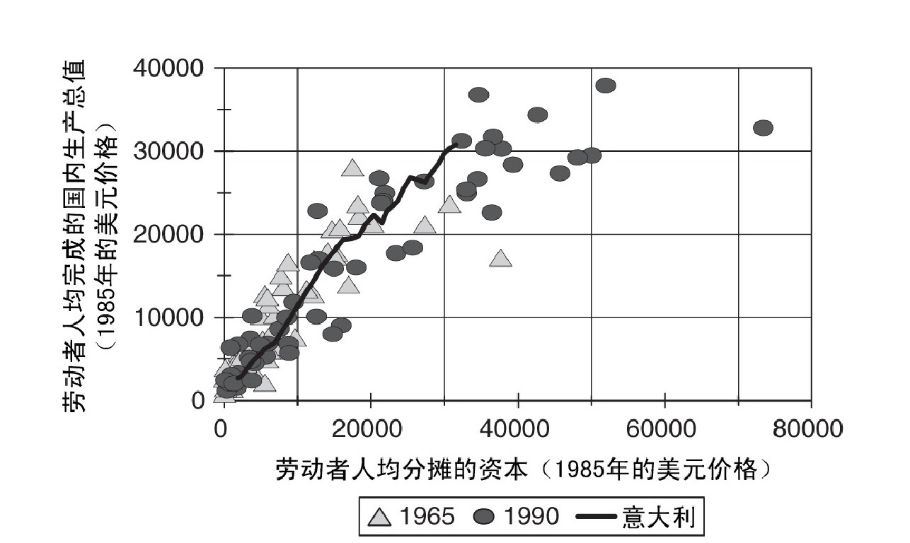
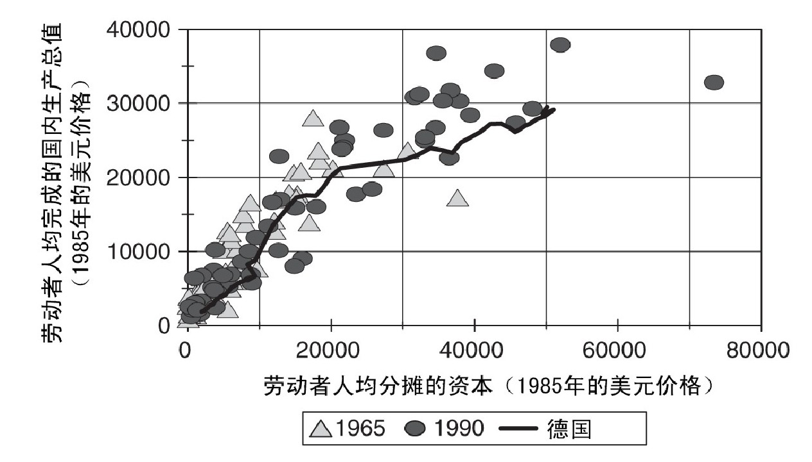

从1815年到1870年，工业革命从英国传播到整个欧洲大陆，并且取得了巨大的成功。西欧各国不仅奋起追赶领先的英国，还和英国一起组成了创新集团，共同推进世界科技发展。美国也在19世纪实现了工业化，很快加入领头的创新集团。可以说，美国已经成为世界技术的领导者，只不过它和其他几个国家“并驾齐驱”——和美国水平相当的国家包括西欧各国和英国。
西欧的成功出乎意料吗？这取决于人们如何看待工业革命。一些历史学家认为，现实中在英国出现的工业革命完全有可能发生在法国或德国，因此需要研究的问题是：为什么工业革命出现在欧洲，而不是亚洲？在这些历史学家看来，欧洲大陆很快就实现工业化，这是理所当然的事情。不过，另一些历史学家则认为，英国和欧洲大陆在制度或经济激励方面存在根本性差异，在这种情况下，需要对西欧各国的工业化做出解释。
制度论者认为，与时代脱节的旧制度阻碍了18世纪欧洲大陆的发展。法国大革命扫除了这些旧制度，法兰西共和国和拿破仑的军队又把新制度传播到了欧洲的大部分地区。在法国人征服的每一处地方，他们都参照本国模式进行改革，具体措施包括：废除奴隶制，法律面前人人平等，确立新的司法制度（《拿破仑法典》），没收修道院财产，通过废除内部关税和征收统一的外部关税来创建全国性市场，建立更为合理的税收体系，普及世俗性的初等教育，发展现代中学、专科学校和大学，以及促进科技协会和科学文化的发展。俄国等国被拿破仑击败，但没有成为法兰西帝国的一部分，不过它们也对各自的制度进行了现代化改革。拿破仑发动的战争使得这些改革没有产生直接影响，但在滑铁卢战役之后，欧洲已经为工业腾飞做好了准备。
另一种解释强调经济激励对于采取新技术所起到的作用。首先，英国最早开始创新，这意味着英国制造商在竞争中强于欧洲大陆的同行；其次，工业革命产生的新技术不适合大陆国家，因为那些国家的工资水平较低，并且能源价格普遍高于英国。欧洲大陆要想实现工业化，必须等待合适的新技术出现，并且要保护本国工业，以应对来自英国的竞争。
英国并没有制定政策来“实现工业化”，但此后的大多数国家都采取策略，效仿英国的成功模式。19世纪出现了一整套发展政策，许多国家先后采纳。这些政策最初在美国奏效（参见第六章），随后，弗里德里希·李斯特又在欧洲大力倡导这些政策。李斯特是德国人，1825年至1832年期间在美国生活，之后返回德国并撰写了《政治经济学的国民体系》（1841年）一书。他提出的标准发展策略基于拿破仑的制度改革，包括四个目标：（1）废除内部关税并改善交通条件，建立大规模的全国性市场；（2）征收外部关税，保护“尚处于婴儿期的工业”，抵抗来自英国的竞争；（3）成立银行，稳定货币并提供商业资金；（4）建立大众教育体系，加快新技术的采用和发明。这一整套发展策略帮助欧洲大陆最终赶上了英国。
德国是一个很好的例子。在中世纪，德国处于分裂状态，有几百个独立的政治主体。1815年维也纳会议召开时，这一数字减少到38个。普鲁士是最大的德意志邦国，它在18世纪着手普及初等教育。其他邦国相继跟进。到19世纪中期，初等教育已基本在德国范围内普及。
普鲁士还在建立全国性市场的过程中起到了带头作用。1818年，普鲁士建立关税同盟，实现了领土范围内的统一管理。其他德意志邦国先后加入。关税同盟在废除内部关税的同时，征收统一的外部关税，从而将英国制造商排除在外。经济同盟为1871年成立的德意志帝国奠定了基础。
铁路的修建巩固了市场一体化进程。第一条德国铁路联结纽伦堡和菲尔特，全长6公里，于1835年建成，仅比联结利物浦和曼彻斯特的铁路晚了5年。19世纪50年代，铁路主干线铺设完成，随后的几十年里，各条支线不断增加。到1913年，已经通车的铁路里程达到6.3万公里。
英国工业革命并没有涉及投资银行，但在欧洲大陆的工业化进程中，投资银行发挥了重要作用。荷兰促进国民工业通用银行率先发挥了作用，该行于1822年成立，致力于促进低地国家的工业发展。随后，德国的私人银行起到了同样的作用。1852年，动产信誉银行在法国成立，为铁路和工业提供资金，这是巨大的进步。
次年，从动产信誉银行中衍生出达姆施塔特银行，在它的带动下，股份投资银行在德国普及开来。到1872年，日后的德国银行业巨头（德国商业银行、德累斯顿银行、德意志银行等）都已成立。这些银行开设了众多支行，把储户的资金汇聚在一起。它们与工业客户建立起长期合作关系，以经常项目透支的方式，为后者提供低利率的长期资金。这些贷款时常需要用工业资产进行抵押，同时由银行派遣代表在这些工业企业中担任董事。从1880年到第一次世界大战，这些银行为德国工业的迅猛扩张提供了资金支持。
从1815年到1870年，工业革命所涉及的主要行业全部出现在欧洲大陆，而且都有利可图。工业革命之前，珍妮纺纱机和早期的阿克莱特工厂在法国无利可图，但到了19世纪30年代中期，技术进步已经将粗纱的生产成本减少了42%。在成本下降之后，新式工厂变得有利可图。到1840年，法国每年纺织的棉花达到5.4万吨，英国的加工量为19.2万吨。德国和比利时的生产也开始起步，加工量分别达到1.1万吨和0.7万吨。值得注意的是，当时美国的原棉加工量已经达到4.7万吨。
到1870年，欧洲大陆已建立起现代钢铁业。在18世纪之前，熔化并提纯铁矿石所用的燃料是煤炭。工业革命最著名的创新措施之一就是用焦炭（煤炭经过提纯后的一种形式）来取代木炭。1709年，亚伯拉罕·达比在科尔布鲁克代尔钢铁公司率先应用这项技术。不过，直到1750年之后，在生产轧钢产品（钢筋、铁板、铁轨）时，采用焦炭生铁才划算。在此之前，它的用途只限于达比持有专利权的特定铸造过程。1750年至1790年，焦炭生铁取代木炭生铁，成为生产轧钢产品的主要原料。不过，当时焦炭生铁的成本依旧过高，不足以在欧洲大陆完全取代木炭生铁，因为像法国这样的国家拥有广袤的森林，可以提供廉价的木炭，煤炭反倒是稀缺资源。直到五十年后，高炉设计经过不断改进，焦炭炉的生产率终于提高到一定程度，最终在欧洲大陆将木炭完全淘汰。最后的转变在19世纪60年代很短的时间内完成，当时法国企业和德国企业都建造了最先进的高炉。换句话说，它们大步跃进到炼钢技术的最前沿，因为在欧洲大陆只有这种新技术才具备竞争力。
同样，到了19世纪中期，欧洲大陆在新兴产业方面并没有落后于英国。西欧建造了铁路，并且欧洲的机车和英国的一样先进。钢铁生产同样如此。1850年之前，钢材只是炼铁业一种昂贵的副产品，炼铁的主要产品是铁板和铁轨，方法是采用搅炼炉把生铁提炼成锻铁。炼钢的技术难题在于熔炼纯生铁，因此要精确控制其他元素（包括碳）的添加。这需要超过1，500℃的高温。最早的解决办法是采用转炉，这一装置由亨利·贝塞麦和威廉·凯利于1850年左右独立发明。另一种方案由卡尔·威廉·西门子率先提出，他在19世纪50年代建造了一台蓄热炉，它可以烧到很高的温度。1865年，皮埃尔—埃米尔·马丁采用西门子蓄热炉来熔化生铁以制造钢材。事实证明，这种被称为平炉的装置在生产钢板、铁皮和各种结构件时，性能优于贝塞麦转炉。此后，它成为钢铁生产的首选技术，直到20世纪60年代才被碱性氧气吹炼法所取代。重要的是，大规模炼钢技术的四个发明者包括一个英国人、一个美国人、一个住在英格兰的德国人和一个法国人。各国之间没有技术差距。
到1870年，西欧已经克服了主要技术缺陷，但欧洲大陆的生产水平远不如英国。不过，第一次世界大战改变了这一局面，西欧和美国都在制造业方面超过了英国。1880年，英国制造的产品占到世界总量的23%，而法国、德国和比利时一共才占到18%。到了1913年，这三个大陆国家加在一起已经超过了英国，它们的份额上升到23%，而英国下跌到14%。与此同时，北美的份额从15%上升到33%。英国最出色的行业是棉纺织业，1905年至1913年共加工86.9万吨原棉，而美国则同期达到了111万吨，德国43.5万吨，法国23.1万吨。英国在重工业方面的表现要逊色许多。1850年至1854年，英国熔炼的生铁产量为300万吨，而德国同期为24.5万吨，美国为50万吨。1910年至1913年，英国的生铁产量为1，000万吨，而德国的产量达到1，500万吨，美国更是达到2，400万吨。
产量的变化有着重要的政治意义。在19世纪中期，英国号称“世界工厂”，世界上的出口产品绝大部分由英国生产。美国和德国通过扩大出口来增加产量，已经有许多研究分析过它们在外贸方面的进步。英国延续一贯的政策，继续将产品销往帝国领地，帝国的价值由此显现，因此在主要工业国家中掀起了一股抢占殖民地的热潮。德国的钢铁产量超过英国，这对于军火制造而言意义重大。英德之间的贸易争斗让国际局势变得日益紧张，最终导致了第一次世界大战的爆发。
1870年至1913年，欧洲大陆和北美不仅在工业生产方面超过了英国，在技术实力方面也具备了竞争力。事实上，美国超过了英国，成为世界科技的领头羊。不过，在多数行业，重大发现依然出现在所有的工业强国。以全球性视角来看，引人关注的是富裕国家和世界其他地区之间的巨大差异：前者作为一个整体，推动科技向前发展；后者看起来则没有任何创新性贡献。
19世纪晚期的重要特征之一就是一些全新的产业得到发展，这些产业包括汽车、石油、电力和化学。所有富裕国家都参与到这些行业的创立过程中。第一台使用汽油发动机的车辆由奥地利人西格弗里德·马尔库斯于1870年制造。他还发明了电磁打火系统和旋转式化油器，这些设备现在已成为汽车的标准配件。卡尔·本茨于1885年制造了第一台实用车辆，戈特弗里德·戴姆勒和威廉·迈巴赫紧随其后。他们都是德国人。威廉·兰彻斯特于1895年制造了第一台英国车辆，他还发明了盘式制动器和电启动装置。第一家专业制造车辆的公司是1889年在法国成立的潘哈德和勒瓦索尔公司。这家公司还发明了四缸发动机。1902年，雷诺引入了刹车鼓。1903年，荷兰的雅各布斯·斯派克制造了第一辆四轮驱动赛车。汽车的出现需要一系列发明，包括发动机、启动系统、刹车、传动装置、悬挂装置、电气设备等。现代汽车是全部工业强国的技术人员共同的发明成果。到1900年时，所有的工业国家都有汽车制造企业。创新是一种集体行为。
新产业的另一项特征是，许多产业与自然科学的发展有关。在这些领域具备强大科研实力的国家在经济上得到了回报。在20世纪30年代之前，德国是一个最好的例子。德国物理学家和化学家获得过多项诺贝尔奖。工业领域的重要技术人员都经过大学学习。大学里的研究人员做出了重要发现，能够改进工业生产过程，发明新的产品。弗里茨·哈贝尔发现了将空气中的氮转换成氨的办法，这是他在卡尔斯鲁厄大学期间的研究成果，他因此荣获诺贝尔奖。这是一个著名的例子，类似情况还有很多。
希特勒、第二次世界大战和战后两德分治的局面破坏了德国的科学研究。大学研究的领先地位让给了美国，后者拥有庞大的高等教育部门。美国的大学研究得到了政府大笔资金的扶持。冷战期间，研究的主要方向是军事领域，但许多项目对于经济发展也有好处。政府资助的其他方向包括医学、太空探索、人文学科和社会科学。这些资金巩固了美国的世界领先地位。
大多数研发都是在如今的富裕国家中完成的。这些国家努力开发在它们看来能够赢利的技术。因此，它们发明的新产品和新工艺必然适合自身环境和需求。尤其重要的是，富裕国家的高工资水平促使它们开发各种可以通过增加资本投入来节约人力成本的新产品。结果就出现了一种螺旋形的进步轨迹：高工资导致了更多的资本密集型生产，而这一情况又进一步提升了工资水平。这一螺旋形发展轨迹解释了为何富裕国家的收入一路攀升。
西欧和美国包办了世界上所有的技术研发，这样一来就出现了一种世界“生产函数”，它规定了可供所有国家选择的技术。所谓“生产函数”就是以数学形式来估算一个国家在现有的劳动力和资本条件下所能取得的国内生产总值。图8显示了世界生产函数，具体做法是选取57个国家作为样本，选择1965年和1990年两个年份，将劳动者人均完成的国内生产总值和劳动者人均分摊的资本这两项数据分别标注出来。这些小点勾勒出函数的大致情况。它的特点是每个劳动者平均分摊的资本越多，他的产出也越多。而且，当人均资本处于较高水平时，产出的增长幅度明显减缓，这是由于收益递减率在起作用——随着资本的增长，额外得到的产出越来越少。最后，图8中使用不同的符号来表示1965年和1990年的数据。一个国家如果劳动者人均分摊的资本为1万美元，那么1990年它的产出并不会高于1965年的水平。换句话说，这个国家没有取得科技进步。世界科技的变化趋势在于将劳动者人均分摊的资本提高到新的水平，从而达到提高人均产出的目的。这些变化的受益者是富裕国家，它们在1965年就能采用资本密集型技术。到了1990年，能够发明新技术的依然是这些国家。科技进步并不会自然散播到贫困国家。
对于其中一些国家来说，我们可以将劳动者人均产出和人均资本这两项数据追溯到工业革命时期。有了这些数据，我们就能将时间产生的影响和空间产生的影响进行比较。比如，图9中标注为“美国”的曲线将美国自1820年至1990年的人均资本和人均产出的数据连在一起。美国的这条发展轨迹与1965年至1990年间富裕国家和贫困国家的发展轨迹呈现出相同的模式。其他富裕国家也是如此：经济增长随时间推移而产生的变化看起来就像是当今世界由于空间因素而产生的差异。图10显示了意大利的发展轨迹。图11显示了德国的发展轨迹。这些历史轨迹呈现出若干特点：美国作为世界科技的领先者，在同等资本和劳动力的情况下，通常比其他国家生产出了更多产品；德国或许是得益于投资银行的重要援助，积累了更多的人均资本——但这两个国家的根本发展趋势是一样的。经济增长随时间推移所产生的变化与空间差异之间存在着对应关系，造成这一现象的直接原因是，当今世界的可用技术都源自富裕国家。

图8 世界生产函数
贫困国家之所以贫困，就是因为它们使用的是富裕国家过去开发的技术。许多发展中国家做得最好的工业是制衣业。关键技术是缝纫机。脚踏式缝纫机的商业化生产始于19世纪50年代，电动缝纫机于1889年投入使用。如今，大多数发展中国家的出口成就依然建立在19世纪科技的基础上。

图9 美国的发展轨迹
图8中的统计数据同样说明了这一点。为什么秘鲁相对贫困？1990年，秘鲁劳动者人均分摊的资本为8，796美元，人均产出为6，847美元。这些数据与德国1913年时的数据相差无几，当时德国人均分摊的资本为8，769美元，人均产出为6，425美元。哪个国家现在人均分摊的资本越少，落后的年限也就越久。比如，津巴布韦1990年劳动者人均分摊的资本为3，823美元，劳动者的人均产出为2，537美元。这两项数据如果放在1820年不算太糟糕。马拉维的人均分摊资本为428美元，劳动者人均完成的国内生产总值为1，217美元，大致相当于印度在19世纪早期的水平，远低于当时英国、美国和西欧各国的水平。甚至到了1990年，印度劳动者人均分摊的资本仅仅增加到1，946美元，人均产出达到3，235美元，算是赶上了英国在1820年的水平。

图10 意大利的发展轨迹

图11 德国的发展轨迹
这里有个很明显的问题：为什么秘鲁、津巴布韦、马拉维和印度不采用西方国家的技术，让自己也变得富裕起来？答案是，采用西方技术并不能带来收益。西方国家在21世纪所采用的技术代价高昂，劳动者分摊的人均资本数额巨大。只有当工资水平相对于资本成本较高时，采用这样的技术才有利可图。在所有的示意图中，这表现为劳动者人均产出和人均资本之间的关系曲线逐渐变得平缓。与人均资本处于较低水平时相比，当人均资本达到较高水平时，要想把人均产量再提高1，000美元，需要投入的人均资本就更多。只有当劳动力价格十分昂贵的时候，才值得额外投入这么多资本。在西方国家的发展过程中，高工资水平促使人们发明各种节约劳动力的技术，而这些技术的使用又推动生产率和工资水平继续上涨。如此循环往复，不断进步。如今的贫困国家错过了发展机遇。它们工资水平低，资本成本高，只好依靠陈旧的技术和低收入勉力维持。
工业发展史为这些原理提供了范例。在上一章里，我们分析了机械动力织布机的发明，同时也谈到，此类机械在经过完善之后，最终在美国（国内工资水平很高）和英国投入使用。在工资水平较低的国家，机械动力织布机没法做到利润最大化，因此当地人依旧使用手工织布机。到了19世纪，在工资水平最高的美国成为世界经济领头羊之后，这些国家的处境更加困难。美国发明的技术体现了国内的经济环境。19世纪90年代，一个名叫詹姆斯·亨利·诺思罗普的英国移民做出了一系列发明，制造出一台全自动纺织机。这种机器大幅提高了生产率，但是需要大量投资。在美国，因为工资水平很高，使用这种纺织机有利可图，但在英国就不一样了，它的成本太昂贵，虽然按照世界标准来看，英国也是一个高工资的国家。对于贫困国家来说，诺思罗普纺织机更加不适合。在技术变革中，经济强国的发明家试图减少需要支付高工资的劳动力，而他们发明的机械设备进一步加强了富裕国家的竞争优势，同时贫困国家没有得到任何好处。